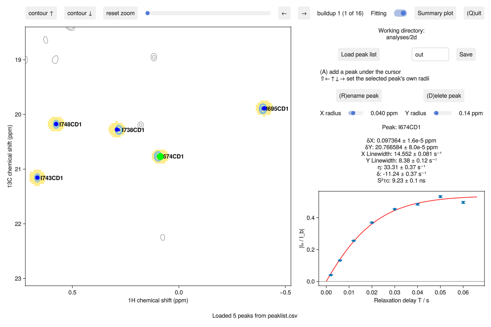
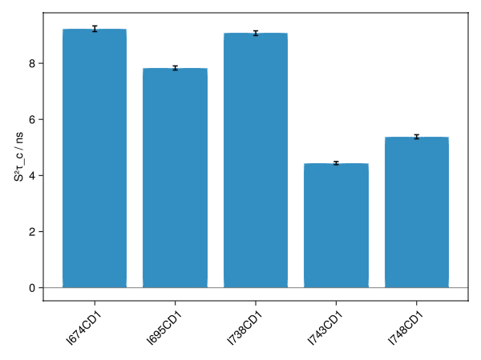

Methyl CCR (S²τc)
methylccr2d measures the order parameter of the methyl symmetry axis, as $S^2\tau_c$, from ¹H–¹H cross-correlated relaxation in a methyl group (Sun, Kay and Tugarinov, J. Phys. Chem. B 115, 14878 (2011)). A buildup series $I_a$ and a decay series $I_b$ are recorded at a series of delays $T$, and their ratio is fitted to
\[\left|\frac{I_a}{I_b}\right| = \frac{C\,\eta\,\tanh\!\left(\sqrt{\eta^2+\delta^2}\,T\right)} {\sqrt{\eta^2+\delta^2} - \delta\,\tanh\!\left(\sqrt{\eta^2+\delta^2}\,T\right)},\]
where $\eta$ is the CCR rate, $\delta < 0$ couples the fast- and slow-relaxing coherences, and $C$ is 3/4 for the triple-quantum experiment and 1/2 for the double-quantum one. For an ideal methyl geometry with $r_{HH} = 1.813$ Å,
\[S^2\tau_c = \frac{\eta}{K}, \qquad K = \frac{9}{40}\left(\frac{\mu_0}{4\pi}\right)^2 \frac{\gamma_H^4\,\hbar^2}{r_{HH}^6} \approx 3.61\times10^{9}\ \text{s}^{-2},\]
so $S^2\tau_c$ in ns is about $0.277\,\eta$, with $\eta$ in s⁻¹.
Usage
Give the decay series, then the buildup:
using NMRAnalysis
methylccr2d(12, 11)
methylccr2d(12, 11; T=[0.002, 0.006, 0.012, 0.02, 0.03], C=1/2) # double quantumThe delays are read from the buildup series' annotations or vdlist, or asked for. Give them in seconds with T.
Example
The triple-quantum experiment on ILV-labelled FLN5:
decay, buildup = example("methylccr2d_fln5")
methylccr2d(decay, buildup)
Output
Save writes these parameters for each peak to results.csv, the summary plot below to summary.pdf, and a plot of each peak's fit to peaks/. See Output for the other files.
| Parameter | Meaning |
|---|---|
S2tc | $S^2\tau_c$, ns |
eta | CCR rate η, s⁻¹ |
delta | Coupling term δ, s⁻¹ |
For the example:
| label | resnum | fitstatus | eta | delta | S2tc |
|---|---|---|---|---|---|
| I674CD1 | 674 | converged | 33.31 ± 0.37 | -11.24 ± 0.37 | 9.23 ± 0.1 |
| I695CD1 | 695 | converged | 28.26 ± 0.27 | -7.51 ± 0.28 | 7.832 ± 0.075 |
| I738CD1 | 738 | converged | 32.74 ± 0.3 | -8.27 ± 0.29 | 9.073 ± 0.084 |
| I743CD1 | 743 | converged | 16.03 ± 0.21 | -3.7 ± 0.31 | 4.441 ± 0.057 |
| I748CD1 | 748 | converged | 19.41 ± 0.27 | -3.25 ± 0.33 | 5.379 ± 0.074 |
